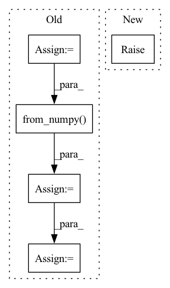

Pattern ID :15364
Before Change
mask = torch.ones(x.size(0), 1, x.size(2), x.size(3))
temp = torch.ones(x.size(0), 1, x.size(2), x.size(3))
for i in range(x.size(0)):
mask_temp = Masks.get_ff_mask(height, width)
mask_temp = torch.from_numpy( mask_temp)
mask[i,:,:,:] = temp[i,:,:,:] * mask_temp
if x.is_cuda:
mask = mask.cuda()
result = x * (1. - mask)After Change
upsampled_image = F.interpolate(downsampled_image, size=(height, width), mode="nearest")
result = upsampled_image * mask + x * (1. - mask)
else:
raise NotImplementedError("Not implemented mask type.")
return result, maskIn pattern: SUPERPATTERN
Frequency: 3
Non-data size: 5
Instances Fragment ID: 52077083
Project Name: sayednadim/global-and-local-attention-based-free-form-image-inpainting
Commit Name: 2e453ae0b658395a88acb8db67115db86d9274ea
Time: 2020-08-16
Author: smnadimuddin@gmail.com
File Name: model/mask.py
M Class Name: AnonimousClass
N Class Name: AnonimousClass
M Method Name: mask_image(2)
N Method Name: mask_image(2)
M Parent Class:
N Parent Class:
M File Name: model/mask.py
N File Name: model/mask.py
M Start Line: 40
M End Line: 48
N Start Line: 56
N End Line: 72
Before Change
audio, _ = librosa.load(audio_path, sr=self.sample_rate) // reading the data
else:
audio = audio_path
feats = self.proc.process_audio(audio).T
feats = torch.from_numpy( feats)
feats = feats.unsqueeze(0)
preds = self.model(feats)[0] // extracting the activations by passing the feature through the NN
preds = self.model.final_pred(preds)
preds = preds.detach().numpy()
preds = np.transpose(preds[:2, :])
if self.inference_model == "PF": // Online _ causalAfter Change
elif inference_model == "DBN": // instantiating an HMM decoder - Is chosen for offline inference
self.estimator = DBNDownBeatTrackingProcessor(beats_per_bar=[2, 3, 4], fps=50)
else:
raise RuntimeError("inference_model can be either "PF" or "DBN"")
preds = self.activation_extractor(audio_path)
if inference_model == "PF": // Online _ causal
data = self.estimator.process(preds) Fragment ID: 52077086
Project Name: mjhydri/beatnet
Commit Name: 0fb33177b8fcafe2daff996b597bcb04eeb71a15
Time: 2021-10-29
Author: mj.hydri@gmail.com
File Name: src/BeatNet/BeatNet.py
M Class Name: BeatNet
N Class Name: BeatNet
M Method Name: process(4)
N Method Name: process(2)
M Parent Class:
N Parent Class:
M File Name: src/BeatNet/BeatNet.py
N File Name: src/BeatNet/BeatNet.py
M Start Line: 47
M End Line: 71
N Start Line: 39
N End Line: 51
Before Change
torch_accessible: bool = False,
):
assert name in self._host_data
host_array = self._host_data[name]
if name_on_device is None:
name_on_device = name
assert name_on_device not in self._device_data_pointer
if not torch_accessible:
device_array_ptr = cuda_driver.mem_alloc(host_array.nbytes)
cuda_driver.memcpy_htod(device_array_ptr, host_array)
self._device_data_pointer[name_on_device] = device_array_ptr
else:
torch_tensor_device = torch.from_numpy( host_array) .cuda()
self._device_data_via_torch[name_on_device] = torch_tensor_device
self._device_data_pointer[name_on_device] = CudaTensorHolder(
torch_tensor_device
)
After Change
name_on_device: Optional[str] = None,
torch_accessible: bool = False,
):
raise NotImplementedError
def is_data_on_device(self, name: str) -> bool:
return name in self._device_data_pointer Fragment ID: 52077120
Project Name: salesforce/warp-drive
Commit Name: 6dbb58d7e7ee93f71a3e99bed46d0e58ed9b2e4b
Time: 2022-05-18
Author: bchu@nvidia.com
File Name: warp_drive/managers/data_manager.py
M Class Name: CUDADataManager
N Class Name: CUDADataManager
M Method Name: _to_device(4)
N Method Name: _to_device(4)
M Parent Class:
N Parent Class:
M File Name: warp_drive/managers/data_manager.py
N File Name: warp_drive/managers/data_manager.py
M Start Line: 470
M End Line: 486
N Start Line: 451
N End Line: 451